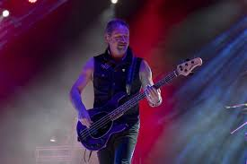
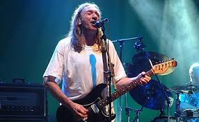

Concierto en A Coruña
14 de diciembre de 2018 — Coliseum A Coruña
Detalles del evento
| Concepto | Información |
|---|---|
| Aforo | 11.000 personas |
| Precio de las entradas | 30 € |
| Fecha y hora del concierto |

Crónica
El 14 de diciembre de 2018 marcó el inicio de la gira de despedida de Rosendo en el Coliseum A Coruña. Una noche que marcó sello en Galicia: Rosendo encendió el Coliseum con su rock callejero, visceral y directo al corazón.
Fue un concierto íntimo pero eléctrico, un lugar donde cada riff y cada frase parecían un diálogo entre el maestro y su público, abrazo de despedida antes de las ciudades más grandes. El artista hizo las delicias de las 11.000 personas que llenaron el recinto.
Galicia siempre ha sido tierra de rock auténtico y gente de verdad. Rosendo salió al escenario acompañado por Rafa J. Vegas al bajo y Mariano Montero a la batería, su formación más fiel durante las últimas décadas.

La noche fue un repaso exhaustivo por toda su carrera: desde los tiempos de Leño
con temas como Maneras de vivir
y El porqué de tus silencios
, hasta sus grandes clásicos
en solitario como Flojos de pantalón
, Loco por incordiar
y Agradecido
.
El público coruñés le dedicó una ovación tras cada tema. Fue una noche de celebración, emoción y reconocimiento a una carrera intachable de más de 40 años.
Ubicación
Galería del concierto



"Galicia siempre ha sido tierra de rock auténtico y gente de verdad." — Rosendo Mercado